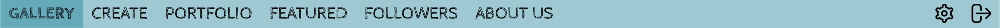
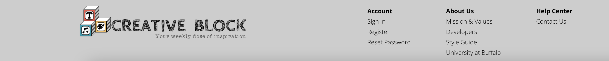
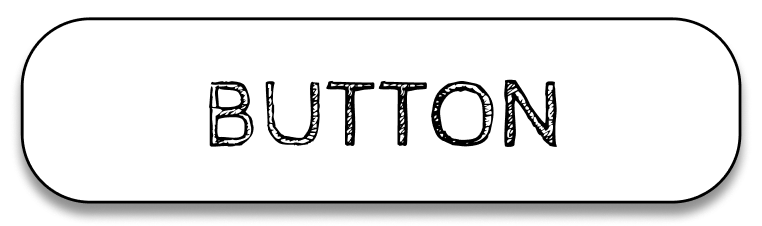
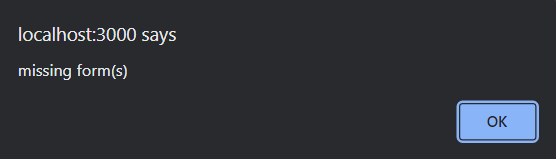
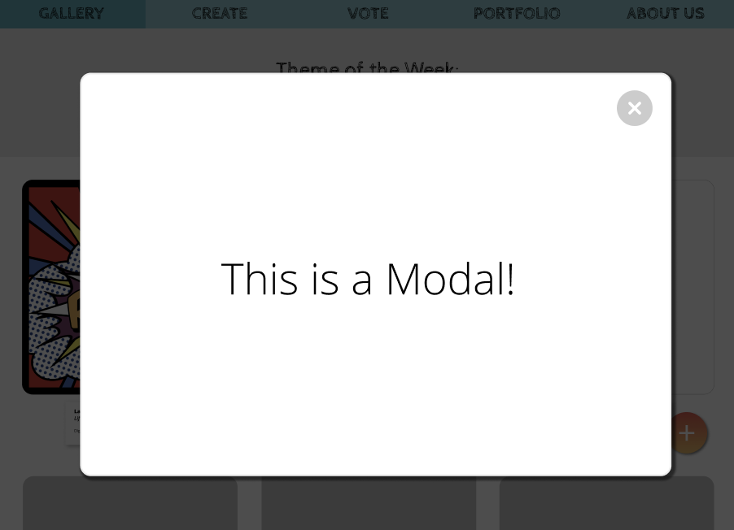
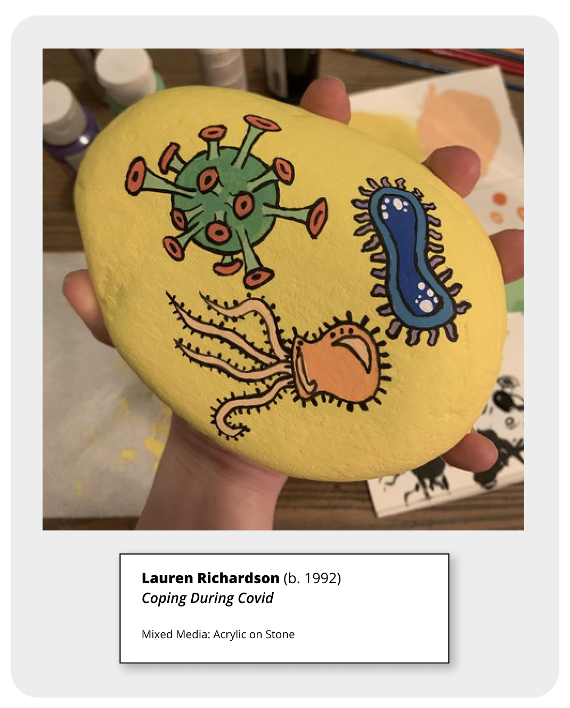

Uses: This is the full brand logo that may be used throughout the platform. It will be featured at the top of both the login and registration forms during the onboarding process. We attempted to use contrast with our choice of font styles by pairing a script and a decorative font. The logo includes a set of three blocks that represent the multiple forms of creative expression demonstrated by our users.
Uses: This is the partial logo to be used without the full 'CREATIVE BLOCK' text as seen above. I can be used throughout the Creative Block platform, specifically, in the footer and 'Abous Us' page.
Uses: This icon will be used for our favicon. We simplified the full website logo above to only include the blocks and filled in full color. This will make it easier to identify at a smaller size.
Icons: For all icons used throughout the platform, we will be using the Flaticon Website. To keep a consistent feel, the icon styling should be rounded and either black or white. Some of these icons include Settings, Logout, Cancel, Upload, and Back Arrows.
HEX: #ededed
RGB: rgb(237, 237, 237)
Uses: This shade of light gray will be used for block strips on headers and the background of a gallery post.
HEX: #000000
RGB: rgb(0, 0, 0)
Uses: Black will be used for a vast majority of text throughout the website.
HEX: #ffffff
RGB: rgb(255, 255, 255)
Uses: White will be used for the background color of pages as well as form text color in the onboarding pages such as registration and login.
HEX: #1a9bae
RGB: rgb(26, 155, 174)
Uses: This shade of blue will be used in the navigation bar. 50% transparency may also be used for shading and gradients.
HEX: #ea5a4f
RGB: rgb(234, 90, 79)
Uses: This shade of red will be used sparingly for buttons as well as for error messaging. 50% transparency may also be used for shading and gradients.
HEX: #f4be61
RGB: rgb(244, 190, 97)
Uses: This shade of yellow will be used sparingly for buttons as well as for highlighting important messages. 50% transparency may also be used for shading and gradients.
font-family: 'Cabin Sketch', cursive;
font-weight: Bold
font-weight: Regular
font-size: Over 40px
Uses: These fonts are used sparingly for main headings and titles, as well as the navigation bar. It is a Decorative font style that has the appearance of hand-sketched block lettering. We chose the font to symbolize the creative process of artists. It should be used with ALL CAPS in either Regular and Bold, but it should not be italized.
font-family: Typewriterhand
font-style: regular
font-weight: regular
font-size: 20px to 40px
Uses: This font will be used for subheadings and input boxes during the onboarding proccess. It is a Script font style that has the appearance of handwriting. The font only has one thickness and cannot be italized.
font-family: 'Open Sans', sans-serif
font-style: italics, regular
font-weight: 300, 400, 500, 600, 700, 800
font-size: Up to 20px
Uses: This font will be used for a majority of basic text throughout the website. It is a Sans Serif font style that is easy to read. There are many different ways to style this font which gives the developer a bit of flexibility when incorporating for their components.
Features: The navigation bar will be a strip at the top of the page. When hovered the different tabs will change from regular text to bolded text and change to a more pigmented color blue. When clicked, the page will redirect you and the active tab will not be highlighted to a darker shade.
Responsiveness: The nav bar uses percents to fill the entire width of the page. It will shrink and enlarge based on the size of the screen. If the website is converted to a mobile application, we will change from text to icons and move the strip to the bottom of the page. It will be thinner than the web version.
Features: The footer will be a strip at the bottom of the page. It will include the sections: Account, About Us, and Help Center. These will display various links such as the Style Guide that you're currently viewing. Additionally, the company logo will be featured on the left hand side of the footer.
Responsiveness: Similarly to navigation, the footer will be able to shrink based on the width of the page. If the size shrinks significantly, the logo will be stacked on top of the three categories of links.
Features: The buttons will stay consistent whenever possible and follow the styling seen below. The background is white, the text is in All Caps using the font-family: CabinSketch-Regular in size 25px. The dimension height will be 50px and the width will default to fit content.
Responsiveness: The width of the button will be determined by the 'fit-content' attribute. Therefore, if the text becomes smaller, the button will also resize.
Features: We consistently use alerts to handle any error messaging. These are used during form submission in login and registration pages as well as during content uploads. An example of an alert message is shown in the image below.
Responsiveness: This will stay consistent accross all platforms.
Features: The modal will be used for two separate layouts within our platform: Followers and Content Information. If you click on the followers icon in the profile page or any shared content in the gallery, the modal will pop up on the screen and display relevant content. The background will phade darker so your focus is drawn to the window. To exit, there will be an 'x' icon in the top right corner. For consistentcy, the edges will be rounded using 'border-radius: 25;'
Responsiveness: The modal will take up roughly 75% of the overall page. It should center the modal window on any size page it is opened in.
Features: Onboarding should remain consistent from resistration to login.
The input fields will be contained inside of a gradient form. There should be
placeholders within each input textbox in Typewriterhand font. The gradient used
for the background color is:
linear-gradient(132.37deg, rgba(26, 155, 174, 0.5) 0%, #E0C597 51.36%, #DB938E 98.6%);
Responsiveness: The form in which our input fields are contained will be given a dimension based on percentage rather than by pixels. This will Shink down the content for smaller screen sizes.
Features: All posts that are uploaded on the gallery page will be styled using a flex grid with three columns. The content container will be 30% of the page in width and fit-content of the height. Each post will display a gallery label with the artist name, their birth year, content type and the materials used to create the content.
Responsiveness: The flex container will change dynamically depending on the sizes of the screen. Once it drops below certain screen size, the flexbox will change to a single column and the posts will be stacked.